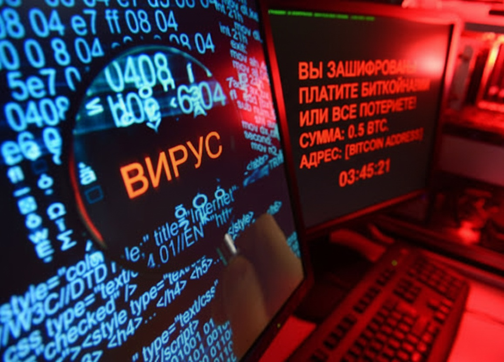

Базовая информация про вирусы

Вредоносная программа — программа предназначенная для незаконного доступа к информации, скрытого использования компьютера, нарушения работы ПК и компьютерных сетей. Для простоты любые вредоносы называют вирусами.
Есть несколько причин для создания таких программ:
1. Нанесения вреда (к примеру вирусы, созданные для уничтожения инфраструктуры), примером может послужить израильский и, по неподтверждённым данным американский, вирус Stuxnet, весом всего несколько десятков килобайт, атаковал системы управления урановыми центрифугами, в результате было уничтожено порядка 1000 центрифуг, из-за чего иранская ядерная программа значительно замедлилась.
2. Получения денег (вымогательство). К примеру вирус Petya, который менял загрузочную запись диска, требуя денег за расшифровку раздела, ущерб от вирусов Petya, NotPetya и прочих вымогателей этого семейства составил порядка 10 миллиардов долларов (это столько же, сколько товаров произодит за год весь Таджикистан).
3. Дальнейшего использования компьютера. К примеру, вирус может создавать сеанс связи для удалённого управления компьютером (например для ручного воровства данных), может создавать прокси сервер (он нужен для анонимизации трафика и выдачи мошенника за жертву), для участия в ботнете (ботнет — сеть компьютеров, необходимая для совершения DDOS атак (атаки, при которой сервер становится недоступен или выключается из-за чрезмерной нагрузки).
4. Воровство данных. Пароли, логины, информация, всё это воруется для перепродажи, использования Ваших данных в криминальных схемах, вымогательства.
5. Троллинг. Есть вирусы целенаправленно сделанные, чтобы подгадить: бегающие по рабочему столу тараканы, страшные звуки среди ночи или камеры, воспроизводящие мелодии.